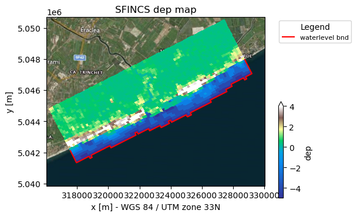
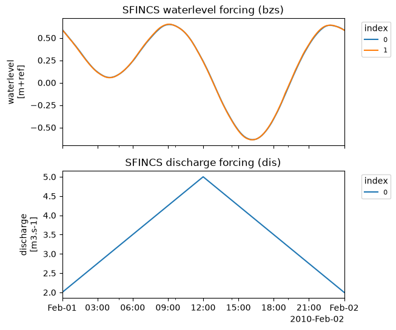

Tip
Build a model from CLI#
In this example a simple SFINCS compound flood model will be made, using HydroMT’s yml-file that allows for fast model configuration. The model is situated in Northern Italy, where a small selection of topography and bathymetry data has already been made available for you to try the examples.
[1]:
# To check the version of hydromt and the hydromt_sfincs plugin, run the following command in a terminal:
!hydromt --models
Model plugins:
- model (hydromt 1.3.1)
- example_model (hydromt 1.3.1)
- sfincs (hydromt_sfincs 2.0.0.dev0)
This example shows how to build a simple SFINCS model on a regular grid, containing an elevation dep-file, offshore water level forcing and an upstream discharge input forcing. For making a more advanced model including e.g. spatially varying infiltration and roughness, see the example notebook: examples/build_from_script.ipynb
In case you want to adjust this example to build a SFINCS model anywhere else in the world, you will have to add your own datasets to HydroMT’s data catalog. For more info on that, check-out:
Steps followed in this notebook to build your SFINCS model:
Build your first SFINCS model
Check what files have been created
Information about created files
Plot current base model
Explanation of HydroMT’s .yml-file
Make new model including forcing
Plot model including forcing
Check what additional files have been created
Let’s get started!
1. Build your first SFINCS model:#
[2]:
root = r"./tmp_sfincs_base"
[3]:
!hydromt build sfincs tmp_sfincs_base -i sfincs_base_build.yml --force-overwrite -v
2026-03-25 13:57:19,622 - hydromt - log - INFO - HydroMT version: 1.3.1
Downloading file 'v1.0.0/data_catalog.yml' from 'https://raw.githubusercontent.com/Deltares/hydromt/main/data/catalogs/artifact_data/v1.0.0/data_catalog.yml' to '/home/runner/.hydromt/artifact_data'.
2026-03-25 13:57:19,952 - hydromt.data_catalog.data_catalog - data_catalog - INFO - Reading data catalog artifact_data latest
2026-03-25 13:57:19,953 - hydromt.data_catalog.data_catalog - data_catalog - INFO - Parsing data catalog from /home/runner/.hydromt/artifact_data/v1.0.0/data_catalog.yml
Downloading data from 'https://github.com/DirkEilander/hydromt-artifacts/releases/download/v0.0.9/data.tar.gz' to file '/home/runner/.hydromt/artifact_data/latest/data.tar.gz'.
SHA256 hash of downloaded file: 32de5b95c171628547f303d7f65d53cbb1b9da9af4834717c8efff93fe55aad4
Use this value as the 'known_hash' argument of 'pooch.retrieve' to ensure that the file hasn't changed if it is downloaded again in the future.
Untarring contents of '/home/runner/.hydromt/artifact_data/latest/data.tar.gz' to '/home/runner/.hydromt/artifact_data/latest'
2026-03-25 13:57:22,408 - hydromt.model.model - model - INFO - Initializing sfincs model from hydromt_sfincs (v2.0.0.dev0).
2026-03-25 13:57:22,408 - hydromt.model.model - model - WARNING - No region component found in components.
2026-03-25 13:57:22,409 - hydromt - log - INFO - HydroMT version: 1.3.1
2026-03-25 13:57:22,410 - hydromt.model.model - model - INFO - build: config.update
2026-03-25 13:57:22,410 - hydromt.model.model - model - INFO - config.update.dict=None
2026-03-25 13:57:22,410 - hydromt.model.model - model - INFO - config.update.skip_validation=False
2026-03-25 13:57:22,410 - hydromt.model.model - model - INFO - config.update.tref=20100201 000000
2026-03-25 13:57:22,410 - hydromt.model.model - model - INFO - config.update.tstart=20100201 000000
2026-03-25 13:57:22,410 - hydromt.model.model - model - INFO - config.update.tstop=20100202 000000
2026-03-25 13:57:22,410 - hydromt.hydromt_sfincs.components.config.config - config - INFO - Updating 3 attributes in model config.
2026-03-25 13:57:22,426 - hydromt.model.model - model - INFO - build: grid.create_from_region
2026-03-25 13:57:22,427 - hydromt.model.model - model - INFO - grid.create_from_region.res=150
2026-03-25 13:57:22,427 - hydromt.model.model - model - INFO - grid.create_from_region.crs=utm
2026-03-25 13:57:22,427 - hydromt.model.model - model - INFO - grid.create_from_region.rotated=True
2026-03-25 13:57:22,427 - hydromt.model.model - model - INFO - grid.create_from_region.hydrography_fn=None
2026-03-25 13:57:22,427 - hydromt.model.model - model - INFO - grid.create_from_region.basin_index_fn=None
2026-03-25 13:57:22,427 - hydromt.model.model - model - INFO - grid.create_from_region.align=True
2026-03-25 13:57:22,427 - hydromt.model.model - model - INFO - grid.create_from_region.dec_origin=0
2026-03-25 13:57:22,427 - hydromt.model.model - model - INFO - grid.create_from_region.dec_rotation=3
2026-03-25 13:57:22,427 - hydromt.model.model - model - INFO - grid.create_from_region.region={'geom': PosixPath('/home/runner/work/hydromt_sfincs/hydromt_sfincs/docs/_examples/data/region.geojson')}
2026-03-25 13:57:22,427 - hydromt.data_catalog.sources.data_source - data_source - INFO - Reading region.geojson GeoDataFrame data from /home/runner/work/hydromt_sfincs/hydromt_sfincs/docs/_examples/data/region.geojson
2026-03-25 13:57:22,439 - hydromt.hydromt_sfincs.components.config.config - config - INFO - Updating 9 attributes in model config.
2026-03-25 13:57:22,447 - hydromt.model.model - model - INFO - build: elevation.create
2026-03-25 13:57:22,447 - hydromt.model.model - model - INFO - elevation.create.buffer_cells=0
2026-03-25 13:57:22,448 - hydromt.model.model - model - INFO - elevation.create.interp_method=linear
2026-03-25 13:57:22,448 - hydromt.model.model - model - INFO - elevation.create.elevation_list=[{'elevation': 'merit_hydro', 'zmin': 0.001}, {'elevation': 'gebco'}]
2026-03-25 13:57:22,462 - hydromt.data_catalog.sources.data_source - data_source - INFO - Reading merit_hydro RasterDataset data from /home/runner/.hydromt/artifact_data/latest/merit_hydro/{variable}.tif
2026-03-25 13:57:22,491 - hydromt.data_catalog.sources.data_source - data_source - INFO - Reading gebco RasterDataset data from /home/runner/.hydromt/artifact_data/latest/gebco.tif
2026-03-25 13:57:22,713 - hydromt.model.model - model - INFO - build: mask.create_active
2026-03-25 13:57:22,713 - hydromt.model.model - model - INFO - mask.create_active.zmin=None
2026-03-25 13:57:22,713 - hydromt.model.model - model - INFO - mask.create_active.zmax=None
2026-03-25 13:57:22,713 - hydromt.model.model - model - INFO - mask.create_active.include_polygon=/home/runner/work/hydromt_sfincs/hydromt_sfincs/docs/_examples/data/region.geojson
2026-03-25 13:57:22,713 - hydromt.model.model - model - INFO - mask.create_active.include_zmin=-5
2026-03-25 13:57:22,713 - hydromt.model.model - model - INFO - mask.create_active.include_zmax=None
2026-03-25 13:57:22,713 - hydromt.model.model - model - INFO - mask.create_active.exclude_polygon=None
2026-03-25 13:57:22,713 - hydromt.model.model - model - INFO - mask.create_active.exclude_zmin=None
2026-03-25 13:57:22,713 - hydromt.model.model - model - INFO - mask.create_active.exclude_zmax=None
2026-03-25 13:57:22,713 - hydromt.model.model - model - INFO - mask.create_active.fill_area=10.0
2026-03-25 13:57:22,714 - hydromt.model.model - model - INFO - mask.create_active.drop_area=0.0
2026-03-25 13:57:22,714 - hydromt.model.model - model - INFO - mask.create_active.connectivity=8
2026-03-25 13:57:22,714 - hydromt.model.model - model - INFO - mask.create_active.all_touched=True
2026-03-25 13:57:22,714 - hydromt.model.model - model - INFO - mask.create_active.reset_mask=True
2026-03-25 13:57:22,721 - hydromt.data_catalog.data_catalog - data_catalog - WARNING - overwriting data source 'region.geojson' with provider user and version _UNSPECIFIED_.
2026-03-25 13:57:22,721 - hydromt.data_catalog.sources.data_source - data_source - INFO - Reading region.geojson GeoDataFrame data from /home/runner/work/hydromt_sfincs/hydromt_sfincs/docs/_examples/data/region.geojson
2026-03-25 13:57:22,733 - hydromt.hydromt_sfincs.components.grid.mask - mask - INFO - 0 gaps outside valid elevation range < 10.0 km2.
2026-03-25 13:57:22,743 - hydromt.hydromt_sfincs.components.config.config - config - INFO - Updating 2 attributes in model config.
2026-03-25 13:57:22,751 - hydromt.model.model - model - INFO - build: mask.create_boundary
2026-03-25 13:57:22,751 - hydromt.model.model - model - INFO - mask.create_boundary.btype=waterlevel
2026-03-25 13:57:22,751 - hydromt.model.model - model - INFO - mask.create_boundary.zmin=None
2026-03-25 13:57:22,751 - hydromt.model.model - model - INFO - mask.create_boundary.zmax=-1
2026-03-25 13:57:22,752 - hydromt.model.model - model - INFO - mask.create_boundary.include_polygon=None
2026-03-25 13:57:22,752 - hydromt.model.model - model - INFO - mask.create_boundary.include_zmin=None
2026-03-25 13:57:22,752 - hydromt.model.model - model - INFO - mask.create_boundary.include_zmax=None
2026-03-25 13:57:22,752 - hydromt.model.model - model - INFO - mask.create_boundary.include_polygon_buffer=0
2026-03-25 13:57:22,752 - hydromt.model.model - model - INFO - mask.create_boundary.exclude_polygon=None
2026-03-25 13:57:22,752 - hydromt.model.model - model - INFO - mask.create_boundary.exclude_zmin=None
2026-03-25 13:57:22,752 - hydromt.model.model - model - INFO - mask.create_boundary.exclude_zmax=None
2026-03-25 13:57:22,752 - hydromt.model.model - model - INFO - mask.create_boundary.connectivity=8
2026-03-25 13:57:22,752 - hydromt.model.model - model - INFO - mask.create_boundary.all_touched=False
2026-03-25 13:57:22,752 - hydromt.model.model - model - INFO - mask.create_boundary.reset_bounds=False
2026-03-25 13:57:22,764 - hydromt.model.components.grid - grid - WARNING - Replacing grid map: mask
2026-03-25 13:57:22,807 - hydromt.hydromt_sfincs.components.grid.subgrid - subgrid - INFO - No subgrid table available to write.
Explanation of what is provided:
!: the ‘!’ is added so you can run the command line interface (CLI) from a python notebookhydromt build sfincs: HydroMT should build a SFINCS model,tmp_sfincs_base: HydroMT should build the model in a folder called “tmp_sfincs_base” relative to the current working directory (you can also provide absolute paths)--region "{'geom': 'data/region.geojson'}": the area of interest for which a model is created is based on a geometry, which is already defined for you in the file “data/region.geojson”-i sfincs_base_build.yml: model configuration which describes the complete pipeline to build your model, more on that later--force-overwrite: even if there’s already an existing folder with the same name and SFINCS input files, HydroMT will overwrite it-v: add verbosity to the logger
NOTE:
instead of
--region, you can also type-rinstead of
--force-overwrite, you can also type--fofor extra output information of HydroMT’s logfile command, add
-v
[4]:
# For more information on command line available options, type:
!hydromt build --help
Usage: hydromt build [OPTIONS] MODEL MODEL_ROOT
Build models from scratch.
Example usage: --------------
To build a wflow model: hydromt build wflow_sbm /path/to/model_root -i
/path/to/wflow_config.yml -d deltares_data -d /path/to/data_catalog.yml -v
To build a sfincs model: hydromt build sfincs /path/to/model_root -i
/path/to/sfincs_config.yml -d /path/to/data_catalog.yml -v
Options:
-i, --config PATH Path to hydroMT configuration file, for the model
specific implementation. [required]
-d, --data TEXT Path to local yaml data catalog file OR name of
predefined data catalog.
--dd, --deltares-data Flag: Shortcut to add the "deltares_data" catalog
--fo, --force-overwrite Flag: If provided overwrite existing model files
--cache Flag: If provided cache tiled rasterdatasets
-v, --verbose Increase verbosity.
-q, --quiet Decrease verbosity.
--help Show this message and exit.
2. Check what files have been created:#
[5]:
import os
dir_list = os.listdir(root)
print(dir_list)
['sfincs.msk', 'gis', 'sfincs.ind', 'hydromt.log', 'sfincs.dep', 'sfincs.inp']
3. Information about created files:#
SFINCS native input files:
SFINCS configuration: sfincs.inp (Read more)which includes the grid definition (Read more)
depfile: sfincs.dep (Read more)mskfile: sfincs.msk (Read more)indfile: sfincs.ind (Read more)
Check-out the SFINCS manual (see links) in case you want to have more information about each file
HydroMT output:
folder 'gis': contains tiff- and geojson-files of the input files of SFINCS, for you to easily check in your favourite GIS applicationfolder 'subgrid': contains tiff-files of the subgrid input which can be used for downscaling laterhydromt.log: log-file with feedback of HydroMT during building your model
4. Plot current base model#
[6]:
from hydromt_sfincs import SfincsModel
# read the model with hydromt methods
sf = SfincsModel(root=root, mode="r")
sf.read()
2026-03-25 13:57:28,762 - hydromt.model.model - model - INFO - Initializing sfincs model from hydromt_sfincs (v2.0.0.dev0).
2026-03-25 13:57:28,763 - hydromt.model.model - model - WARNING - No region component found in components.
2026-03-25 13:57:28,836 - hydromt.model.components.grid - grid - WARNING - Replacing grid map: mask
2026-03-25 13:57:28,837 - hydromt.model.components.grid - grid - WARNING - Replacing grid map: dep
2026-03-25 13:57:28,849 - hydromt.hydromt_sfincs.components.output - output - WARNING - File /home/runner/work/hydromt_sfincs/hydromt_sfincs/docs/_examples/tmp_sfincs_base/sfincs_map.nc not found.
2026-03-25 13:57:28,850 - hydromt.hydromt_sfincs.components.output - output - WARNING - File /home/runner/work/hydromt_sfincs/hydromt_sfincs/docs/_examples/tmp_sfincs_base/sfincs_his.nc not found.
Here in the plot you see the following:
Background geoimage of the region
Spatial colourplot of the elevation (dep)
In the red line of ‘waterlevel bnd’ the boundary cells along which SFINCS will later force input water levels
[7]:
# plot the model with satelite basemap (see hydromt_sfincs.plot_basemap for more options)
_ = sf.plot_basemap(shaded=False, bmap="sat", zoomlevel=12)

5. Explanation of HydroMT’s .yml-file:#
This model was made using HydroMT’s yaml-file, in this case ‘sfincs_base_build.yml’, that contains:
[8]:
fn = "sfincs_base_build.yml"
with open(fn, "r") as f:
txt = f.read()
print(txt)
global:
data_libs:
- artifact_data # add optional paths to data_catalog yml files
steps:
- config.update:
tref: 20100201 000000
tstart: 20100201 000000
tstop: 20100202 000000
- grid.create_from_region:
region:
geom: data//region.geojson
res: 150 # model resolution
crs: utm # model CRS (must be UTM zone)
rotated: True # allow a rotated grid
- elevation.create:
elevation_list:
- elevation: merit_hydro # 1st elevation dataset
zmin: 0.001 # only use where values > 0.001
- elevation: gebco # 2nd eleveation dataset (to be merged with the first)
- mask.create_active:
include_polygon: data//region.geojson # Note that this is local data and only valid for this example
include_zmin: -5 # set cells below zmin to inactive
- mask.create_boundary:
btype: waterlevel # Set waterlevel boundaries
zmax: -1 # only cells below zmax can be waterlevel boundaries
[9]:
# in case you want to see how hydromt interprets the config file, you can use the following:
from hydromt.readers import _config_read
config = _config_read(fn)
config
[9]:
{'global': {'data_libs': ['artifact_data']},
'steps': [{'config.update': {'tref': '20100201 000000',
'tstart': '20100201 000000',
'tstop': '20100202 000000'}},
{'grid.create_from_region': {'region': {'geom': 'data//region.geojson'},
'res': 150,
'crs': 'utm',
'rotated': True}},
{'elevation.create': {'elevation_list': [{'elevation': 'merit_hydro',
'zmin': 0.001},
{'elevation': 'gebco'}]}},
{'mask.create_active': {'include_polygon': 'data//region.geojson',
'include_zmin': -5}},
{'mask.create_boundary': {'btype': 'waterlevel', 'zmax': -1}}]}
You can see the following sections:
setup_config: arguments are forwarded to the SFINCS model configuration file sfincs.inp, in this case the reference time ‘tref’, model start time ‘tstart’ and end time ‘tstop’setup_grid_from_region: used to create a model grid covering the region you provided;using a grid resolution of 50 meters (res = 50)
using the closest UTM zone (crs = utm) to the model domain as the Coordinate Reference System (also a specific CRS or epsg-code can be provided)
using a rotation that results in a minimum rectangle around your region (if rotation=True)
setup_dep: adds topography and bathymetry data to the model domain. If using local data sources, these should be described in adata_catalog.yml. At least one dataset is required.Additional data sources are merged with the first elevation dataset using merge argements (e.g. zmin, zmax, offset, mask) if provided.
setup_mask_active: set valid model cells based on an input region file (more options available).setup_mask_bounds: set cells at the model domain edge with a maxmimum elevation of -5 meters (zmax = -5) to waterlevel boundary cells.
From here on, we’re going to extend the model with some forcing of water level and river discharge, so that actually something interesting will happen when you run the created SFINCS model later. Also, we’re adding some observations points so we can inspect this. We do this with the additional yml-file sfincs_base_update.yml containing what we want to add:
6. Update the model to include forcing:#
[10]:
!hydromt update sfincs tmp_sfincs_base -i sfincs_base_update.yml -v
2026-03-25 13:57:33,774 - hydromt - log - INFO - HydroMT version: 1.3.1
2026-03-25 13:57:34,080 - hydromt.data_catalog.data_catalog - data_catalog - INFO - Reading data catalog artifact_data latest
2026-03-25 13:57:34,080 - hydromt.data_catalog.data_catalog - data_catalog - INFO - Parsing data catalog from /home/runner/.hydromt/artifact_data/v1.0.0/data_catalog.yml
2026-03-25 13:57:34,787 - hydromt.model.model - model - INFO - Initializing sfincs model from hydromt_sfincs (v2.0.0.dev0).
2026-03-25 13:57:34,787 - hydromt.model.model - model - WARNING - No region component found in components.
2026-03-25 13:57:34,788 - hydromt - log - INFO - HydroMT version: 1.3.1
2026-03-25 13:57:34,788 - hydromt - log - INFO - HydroMT version: 1.3.1
2026-03-25 13:57:34,789 - hydromt.model.model - model - INFO - update: observation_points.create
2026-03-25 13:57:34,789 - hydromt.model.model - model - INFO - observation_points.create.merge=True
2026-03-25 13:57:34,789 - hydromt.model.model - model - INFO - observation_points.create.locations=/home/runner/work/hydromt_sfincs/hydromt_sfincs/docs/_examples/data/compound_example_observation_points.geojson
2026-03-25 13:57:34,848 - hydromt.data_catalog.sources.data_source - data_source - INFO - Reading compound_example_observation_points.geojson GeoDataFrame data from /home/runner/work/hydromt_sfincs/hydromt_sfincs/docs/_examples/data/compound_example_observation_points.geojson
2026-03-25 13:57:34,864 - hydromt.hydromt_sfincs.components.geometries.observation_points - observation_points - INFO - Adding new observation points to existing ones.
2026-03-25 13:57:34,872 - hydromt.model.model - model - INFO - update: water_level.create
2026-03-25 13:57:34,872 - hydromt.model.model - model - INFO - water_level.create.geodataset=gtsmv3_eu_era5
2026-03-25 13:57:34,872 - hydromt.model.model - model - INFO - water_level.create.timeseries=None
2026-03-25 13:57:34,872 - hydromt.model.model - model - INFO - water_level.create.locations=None
2026-03-25 13:57:34,872 - hydromt.model.model - model - INFO - water_level.create.offset=None
2026-03-25 13:57:34,872 - hydromt.model.model - model - INFO - water_level.create.buffer=2000
2026-03-25 13:57:34,872 - hydromt.model.model - model - INFO - water_level.create.merge=True
2026-03-25 13:57:34,872 - hydromt.model.model - model - INFO - water_level.create.drop_duplicates=True
2026-03-25 13:57:34,893 - hydromt.data_catalog.sources.data_source - data_source - INFO - Reading gtsmv3_eu_era5 GeoDataset data from /home/runner/.hydromt/artifact_data/latest/gtsmv3_eu_era5.nc
2026-03-25 13:57:35,144 - hydromt.model.model - model - INFO - update: discharge_points.create
2026-03-25 13:57:35,144 - hydromt.model.model - model - INFO - discharge_points.create.geodataset=None
2026-03-25 13:57:35,144 - hydromt.model.model - model - INFO - discharge_points.create.timeseries=/home/runner/work/hydromt_sfincs/hydromt_sfincs/docs/_examples/data/compound_dis_timeseries.csv
2026-03-25 13:57:35,144 - hydromt.model.model - model - INFO - discharge_points.create.locations=/home/runner/work/hydromt_sfincs/hydromt_sfincs/docs/_examples/data/compound_src_locations.geojson
2026-03-25 13:57:35,144 - hydromt.model.model - model - INFO - discharge_points.create.merge=True
2026-03-25 13:57:35,144 - hydromt.model.model - model - INFO - discharge_points.create.buffer=None
2026-03-25 13:57:35,144 - hydromt.model.model - model - INFO - discharge_points.create.drop_duplicates=True
2026-03-25 13:57:35,152 - hydromt.data_catalog.sources.data_source - data_source - INFO - Reading compound_dis_timeseries.csv DataFrame data from /home/runner/work/hydromt_sfincs/hydromt_sfincs/docs/_examples/data/compound_dis_timeseries.csv
2026-03-25 13:57:35,156 - hydromt.data_catalog.sources.data_source - data_source - INFO - Reading compound_src_locations.geojson GeoDataFrame data from /home/runner/work/hydromt_sfincs/hydromt_sfincs/docs/_examples/data/compound_src_locations.geojson
2026-03-25 13:57:35,237 - hydromt.hydromt_sfincs.components.grid.subgrid - subgrid - INFO - No subgrid table available to write.
The example above means the following: run hydromt with:
update sfincs: i.e. update a SFINCS model.tmp_sfincs_base: original model folder. Here we update the model inplace. Add-o <output folder>to store the udpated model in another directory.-i sfincs_base_update.yml: configuration file containing the components to update and their different options.
[11]:
# Let's see what is in the yml-file:
fn = "sfincs_base_update.yml"
with open(fn, "r") as f:
txt = f.read()
print(txt)
global:
data_libs:
- artifact_data
steps:
- observation_points.create:
locations: data//compound_example_observation_points.geojson
- water_level.create:
geodataset: gtsmv3_eu_era5
buffer: 2000 # [m] find points within 2 km of waterlevel boundary
- discharge_points.create:
timeseries: data//compound_dis_timeseries.csv
locations: data//compound_src_locations.geojson # Note that this is local data and only valid for this example
You can see the following sections:
setup_observation_points: add 3 observation points based on the locations given in the shapefile “data//compound_example_observation_points.shp”setup_waterlevel_forcing: add water level forcing, in this case water levels from a GTSM run, with 4 output points found in the SFINCS model domain. Timeseries are clipped automatically to the earlier provided start and stop time of the SFINCS model (in setup_config)setup_discharge_forcing: add an upstream river discharge input point, in this case from a csv file (timeseries) and a geojson (locations)
7. Plot model including forcing:#
[12]:
from hydromt_sfincs import SfincsModel
# read the model with hydromt methods
sf = SfincsModel(root=root, mode="r")
sf.read()
2026-03-25 13:57:35,954 - hydromt.model.model - model - INFO - Initializing sfincs model from hydromt_sfincs (v2.0.0.dev0).
2026-03-25 13:57:35,955 - hydromt.model.model - model - WARNING - No region component found in components.
2026-03-25 13:57:36,028 - hydromt.model.components.grid - grid - WARNING - Replacing grid map: mask
2026-03-25 13:57:36,029 - hydromt.model.components.grid - grid - WARNING - Replacing grid map: dep
2026-03-25 13:57:36,259 - hydromt.hydromt_sfincs.components.output - output - WARNING - File /home/runner/work/hydromt_sfincs/hydromt_sfincs/docs/_examples/tmp_sfincs_base/sfincs_map.nc not found.
2026-03-25 13:57:36,260 - hydromt.hydromt_sfincs.components.output - output - WARNING - File /home/runner/work/hydromt_sfincs/hydromt_sfincs/docs/_examples/tmp_sfincs_base/sfincs_his.nc not found.
In the forcing plot you see the following:
Water level time-series based on GTSM input for the model period. For each of the 4 stations within the SFINCS domain, these time-series are interpolated to the ‘waterlevel’ boundary cells (bnd) using the two nearest stations.
Discharge time series from the local file input. These timeseries are forced at the ‘discharge src’ points
[13]:
# Plot time-series:
_ = sf.plot_forcing(fn_out="forcing.png")

In the basemap plot you see the following:
Background geoimage of the region
Spatial colourplot of the elevation (dep)
In the red line of ‘waterlevel bnd’ the boundary cells along which SFINCS will later force input water levels
Specified observation points ‘obs’ in red diamond to get a ‘sfincs_his.nc’ output file
Discharge ‘src’ and waterlevel ‘bnd’ point locations.
[14]:
# plot the model basemaps
# Note the added obs and forcing points
_ = sf.plot_basemap(fn_out="basemap.png", bmap="sat", zoomlevel=12)
8. Check what additional files have been created:#
[15]:
dir_list = os.listdir(root)
print(dir_list)
['figs', 'sfincs.msk', 'gis', 'sfincs.ind', 'hydromt.log', 'sfincs.dep', 'sfincs.inp', 'sfincs.src', 'sfincs.obs', 'sfincs_netbndbzsbzifile.nc', 'sfincs.dis']
SFINCS native input files:
obsfile: sfincs.obs (Read more)bndfile: sfincs.bnd (Read more)bzsfile: sfincs.bzs (Read more)srcfile: sfincs.src (Read more)disfile: sfincs.dis (Read more)
Click on Read more in case you want to have more information about what each file means!
In case you want to add other types of forcing, check-out:
Now you have made a model, you can progress to the notebooks:
examples/run_sfincs_model.ipynb
examples/analyse_sfincs_model.ipynb
This notebook provides you a simple SFINCS model on a regular grid. A more advanced example is provided in see examples/build_from_script.ipynb. In addition, an overview of all available options in HydroMT-SFINCS can be found here.
NOTE: HydroMT can build even more models for you, like the Hydrological model Wflow, to provide for instance upstream boundary conditions for your SFINCS model! See e.g: https://deltares.github.io/hydromt/latest/plugins.html